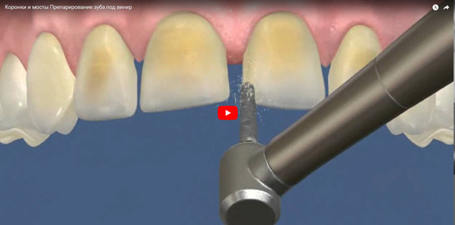
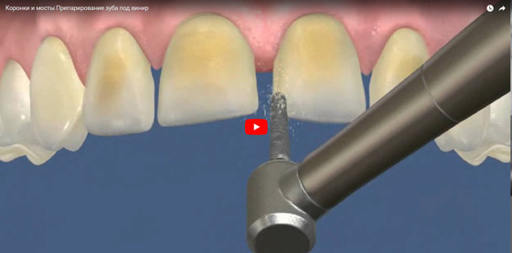

Рекомендации
-
Как правильно чистить зубы
Смотрите в наших видеоподборках
Зубы надо чистить примерно 2 минуты. Основное движение при чистке зубов — выметающее (от десны к краю зуба). Непрерывное движение вверх-вниз не рекомендуется, так как можно травмировать десну. Заканчивать чистку лучше круговыми движениями — это отлично полирует эмаль и массирует десны. Не забывайте тщательно очищать и поверхность языка!"
Очищайте межзубные промежутки с помощью зубной нити (флосса), следя за тем, чтобы нить все время скользила по поверхности зуба, не травмируя десну. Используя ополаскиватель, налейте его в мерный колпачок, наберите в рот и полощите минуту, потом выплюньте.
Сколько раз чистить зубы?
Зубы нужно чистить два раза в день. Чистить зубы чаще не стоит, так как слишком частая чистка зубов истирает эмаль, делая ее тоньше и чувствительнее. После еды в течение дня лучше прополоскать рот водой или ополаскивателем.
Когда чистить?
Утром — после завтрака и вечером- перед сном. До завтрака достаточно прополоскать рот ополаскивателем или простой водой. Почистив зубы после завтрака, Вы сведете к минимуму риск возникновения зубного налета, так как на ваших зубах не останется кусочков пищи, которыми питаются вредные бактерии.
Чем чистить?
Для защиты зубов и десен от бактерий Вам понадобится антибактериальная зубная паста комплексного действия. Такие пасты воздействуют на полость рта в целом — защищают зубы от кариеса и зубного камня, освежают дыхание, снимают кровоточивость и воспаление десен и возвращают Вашим зубам здоровую белизну.Для правильной чистки зубов Вам понадобится качественная зубная щетка. Сегодня в магазинах представлен богатейший ассортимент зубных щеток, и Вы легко выберете ту, которая подойдет именно Вам . И помните, что щетку обязательно надо менять раз в 3 месяца!
-
Отбеливание зубов – такая же элементарная косметическая процедура для зубов, как чистка полости рта. Современный человек регулярно употребляет пищу с естественными и искусственными красителями, что приводит к потере здоровой белизны зубов, а у многих людей цвет зубов от природы недостаточно белый. Мы предлагаем вам осуществить отбеливание зубов в Минске в медицинском центре «Кравира» по самым доступным ценам.
ВИДЫ ОТБЕЛИВАНИЯ ЗУБОВ
Домашнее отбеливание зубов предполагает использование индивидуальных одноразовых кап из пластика, повторяющих форму зубного ряда. Внутрь такой капы вносится специальный отбеливающий гель, и надеваются каппы на обе челюсти. Продолжительность курса составляет около 2 недель.
Офисное отбеливание зубов предполагает прохождение пациентом профессиональной процедуры, осуществляемой врачом-стоматологом в условиях стационара с помощью специального оборудования. Для эффективного отбеливания офисным методом, как правило, достаточно 1–2 процедур.
ПРОТИВОПОКАЗАНИЯ ДЛЯ ОТБЕЛИВАНИЯ ЗУБОВ
Как и любая другая медицинская процедура, отбеливание зубов может иметь определенные противопоказания. Противопоказаниями для выполнения процедуры отбеливания являются:
- аллергических реакций на применяемые препараты
- хронические и инфекционные заболевания в стадии обострения
- беременность и лактация
- онкологические заболевания, сахарный диабет и т.д.
- наличие протезов, коронок и фотополимерных реставраций во фронтальной области
- заболевания десен, кариес, негерметичные пломбы
Этапы процедуры
На первом этапе необходимо проведение профессионально-гигиенической чистки зубов (удаление твердого зубного налета и зубного камня), прохождение курса противовоспалительной терапии в случае наличия воспаленной десны, герметизация полостей зубов, пораженных кариесом.
Второй этап – непосредственно само отбеливание, которое включает изоляцию десны, нанесение на зубы отбеливающего состава, воздействие лампами холодного свечения (Beyond polus) с последующим нанесением слоя фторо-кальциевого восстанавливающего состава.
Третий этап предполагает соблюдение пациентом рекомендаций врача: «Прозрачная диета» (отказ от пищи с красителями) на протяжении 48 часов после процедуры для поддержки результатов отбеливания, использование отбеливающих зубных паст в дальнейшем, соблюдение гигиены полости рта.
-
Современный зубной протез – это непростая биомеханическая конструкция, предназначением которой является замещение утраченного зуба и выполнение его функций. По сути, это наращивание зуба с помощью коронки, которая производится из разных материалов. При этом параметры протеза должны быть максимально приближены к таковым натурального зуба. Повреждение тканей может быть как небольшим, так и довольно крупным, и от этого зависит масштабность лечения и проведения процедуры. Задачей врача-ортопеда является установка пациенту зубного протеза такой конструкции, которая сможет заменить утраченные естественные зубы и будет способствовать сохранению оставшихся зубов в течение долгого времени.
Своим пациентам мы можем предложить следующие виды зубного протезирования:
Протезы несъемные:
- Имплант. Распространенный метод протезирования. После удаления зуба его место занимает титановый стержень. Стержень вставляют глубоко в костную ткань совершенно безболезненным и безопасным методом. На него одевается коронка.
- Мостовидный протез. Так же весьма востребованный метод, использующий несколько коронок. Они крепятся на здоровых зубах. Иногда применяется временная конструкция - адгезивный протез.
- Зубная коронка. Широко распространенный метод протезирования. Небольшая коронка помещается на верхней части зуба.
- Люминиры. Это тонкие пластины для протезирования. Пластины при необходимости легко убираются. Материал исполнения - керамика. Имеется ряд нюансов, прояснить которые способен специалист.
- Керамические виниры. Так же выполняются из керамики, но не являются съемными. Принято использовать для передних зубов.
- Вкладки. Они же керамические пломбы, для их изготовления используются слепки. Обладают значительно большей прочностью, чем другие виды пломб.
 

Протезы съемные:
- Бюгельные протезы. Тщательным образом проектируется металлический каркас для дальнейшего создания в лаборатории. Включает в себя разгружающую конструкцию. И как дополнение обладает удерживающей функцией. Имеет специальные дуги и искусственные зубы.
- Протезы пластиночные. Для них берется акриловый либо нейлоновый тонкий слой материала. На него впоследствии крепятся искусственные зубы. Они могут быть съемными, что для многих очень удобно. Существуют и частично-съемные протезы. Фиксация бывает различная. Это либо десны, либо небо. Но чаще используется крепление на здоровые зубы. Какой вариант лучше подскажет врач.
-
Имплантация зубов — это, если говорить упрощенно, вживление в челюсть специальной титановой вставки (имплантата) — искусственного корня зуба, на который затем устанавливается коронка или мост. Такой способ позволяет полностью заменить утраченный или заменяемый зуб, причем не один, а все необходимые. В некоторых случаях, это единственная возможность восстановить зубы.
ПОКАЗАНИЯ К ПРОВЕДЕНИЮ ИМПЛАНТАЦИИ
Имплантация зубов – сложная процедура, требующая предварительной подготовки и которая проводится на основании объективных данных и рентгенологической картины пациента. Проведение имплантации показано, если:
- Отсутствует один или несколько зубов.
- Имеют место концевые дефекты зубов (отсутствие шестых, седьмых или восьмых зубов).
- «Полная адентия» (полное отсутствие зубов). В таком случае необходима имплантация челюсти).
- Нежелание пациента пользоваться съемным протезам.
ВИДЫ ЗУБНЫХ ИМПЛАНТАТОВ
Зубные имплантаты можно разделить на несколько видов, руководствуясь критериями формы стержня и материала изготовления. Чаще всего для создания протезов применяют титан, поскольку данный металл биологически совместим с человеческой костью; более того, ему не страшна коррозия. Что касается формы стержня, наиболее часто используемыми являются корневидные имплантаты, имеющие множество вариантов конструкций. Их можно отличить по форме резьбы, текстуре поверхности и т.д. Различают корневидные имплантаты винтового и цилиндрического типа. В случае нехватки костной ткани или наличия определенных анатомических особенностей зубного аппарата возможно применение пластиночных, комбинированных, эндодонтически стабилизированных имплантатов.
-
Ортодонтическое лечение — это процесс исправления неправильного прикуса. Специалисты утверждают, что около 90% населения Земли обладает теми или иными дефектами в расположении зубов. Просто у кого-то это ярко выражено, а у кого-то довольно хорошо скрыто и незаметно для окружающих.
Зачем нужно ортодонтическое лечение?
Люди не думают о полезности или вреде своего прикуса и, в большинстве случаев, к исправлению прикуса прибегают из-за его неэстетичного вида. Когда неправильно расположенные зубы портят улыбку или сказываются на строении лица (как пример - дистальный или мезиальный прикус), пациент записывается на прием к ортодонту, и тот назначает ему индивидуальное ортодонтическое лечение.
Однако бывают и такие случаи, когда пациента все устраивает в его улыбке, однако ортодонты настоятельно рекомендуют ему исправление прикуса. Это связано с тем, что неправильное расположение зубов может вызвать серьезные проблемы не только с самими зубами пациента, но и со здоровьем:
- Плохое пережевывание пищи из-за неплотного смыкания контактов зубов часто является причиной язвы желудка, заболеваний желудочно-кишечного тракта.
- Неправильный прикус — идеальная среда для развития пародонтита. При этом заболевании в ротовой полости человека «хозяйствуют» инфекции, часто переходящие на внутренние органы.
- Кроме того, во рту постоянно стоит неприятный запах. Даже если часто чистить зубы и использовать освежители ротовой полости.
- Всегда неправильный прикус воздействует на височно-челюстные суставы (ВНЧС). Во взрослом возрасте проблема ВНЧС будет вызывать много негативных симптомов, таких как сильные головные боли.
Именно поэтому ортодонты порой назначают ортодонтическое лечение прикуса, даже если зрительно улыбка выглядит идеальной.
Чем лечат неправильный прикус при ортодонтическом лечении?
На сегодняшний день ортодонты пользуются несколькими технологиями, способными исправить неправильное расположение зубов. Их - много: пластинки, брекеты, элайнеры, твин-блок и т.п. Покажем три самые популярные.
К детскому ортодонту нужно вести ребенка только когда у него уже все зубы будут постоянными
К сожалению такое отношение к ортодонтическому лечению в детском возрасте у родителей - миф, очень распространенный и, увы, пагубный. Очень часто способствуют этому мифу о детских ортодонтах сами же стоматологи. Не очень хочется комментировать степень погруженности в вопросы детской ортодонтии данных специалистов и их компетенцию, но дискуссии о целесообразности и необходимости так называемого раннего ортодонтического лечения (то есть в детском возрасте) не утихают и поныне. И опять же, действительно иногда бывает такая ситуация: ребенок начал проходить ортодонтическое лечение еще в дошкольном или раннем школьном возрасте, и малыш, и родители старались, носили – следили за ношением ортодонтического аппарата, а когда прикус поменялся - детский ортодонт все равно установил брекет-систему…
Сразу же возникает вопрос, перемешанный с родительским негодованием: зачем детскому ортодонту надо было столько времени «мучать» ребенка, когда все равно ему поставили брекеты?!! Вот отсюда-то и появляется этот миф: как ни крути, а брекеты – это, типа, самая «крутая» штука у детских и взрослых ортодонтов, которая решает все проблемы «на раз». А вот и нет! Не решает брекет-система всех проблем ортодонтического лечения у ребенка.
Ортодонтическое лечение в детском возрасте - самое быстрое и эффективное!
Растущие пациенты - дети и подростки – это самая «благодарная» среда для работы детского ортодонта. Почему? Все очень просто и лежит на поверхности: у детей и подростков наиболее активно идут процессы роста, обновления, обменные процессы. Поэтому одно и то же ортодонтическое усилие, приложенное к растущему и не растущему пациенту, может дать абсолютно разные результаты, с преимуществом, естественно, у растущих пациентов.
В очень большом проценте случаев, при своевременном начале ортодонтического лечения у детей можно избежать потребности установки брекет-системы. Здесь, конечно, крайне важна хорошая, если не отличная, кооперация (то есть помощь детскому ортодонту) со стороны самого пациента и, конечно же, родителей пациента, ведь у детишек и подростков очень часто еще не хватает мотивации для выполнения рекомендаций ортодонта. Однако ж, ортодонтия – это не магия… Бывает и так, что аномалия настолько серьезная, что потенциала более простых аппаратов оказывается недостаточно. В таких случаях мы, ортодонты, вынуждены фиксировать брекеты, чтобы довести лечение до конца. Но! Детский ортодонт всегда должен предупреждать родителей, что при наличии добросовестного раннего ортодонтического лечения мы в любом случае уходим от более сложной и выраженной патологии, тем самым в будущем сокращая сроки ношения брекетов (или элайнеров - в подростковом возрасте). Это тоже крайне важно.
-
Кариес — одна из самых распространенных в мире стоматологических проблем, с которой сталкивался едва ли не каждый человек на планете. Почему одни люди часто болеют кариесом, а у других за жизнь не появляется ни одной пломбы? Можно ли заразиться кариесом? Отчего он появляется, каковы механизмы его действия и как предотвратить кариозное разрушение зубов?
Причины кариеса зубов
Сегодня споры о том, что такое кариес и отчего он бывает, давно в прошлом. Причина возникновения кариеса известна всем — это кариозные бактерии, питающиеся остатками углеводов из пищи и живущие в зубном налете. К слову, мы не рождаемся с этими бактериями, они не входят в изначальный состав нашей микрофлоры, но однажды попав в организм, они обосновываются в нем навсегда. Как правило, «заражение кариесом» происходит в детском возрасте, и воспринимаем мы это заболевание от собственных родителей — чаще всего через общую посуду. Однако бактерии кариеса могут долгое время как бы дремать у нас в организме, никак себя не проявляя до первого удобного случая.
И хотя кариес на данный момент — едва ли не самое изученное стоматологическое заболевание, до сих пор остается вопрос, как остановить кариес — открытия на этом поприще делаются едва ли не каждый год.
Факторы риска возникновения кариеса зубов
Одним из самых интересных вопросов: почему одни люди чаще болеют кариесом, а другие реже, и есть ли те, кто не страдает им вообще. Так, современными теоретикам и практиками стоматологической науки выделяются несколько факторов риска возникновения кариеса. Как нетрудно догадаться, есть среди этих факторов и весьма «избирательные», то есть доподлинно известно, что некоторые люди изначально в большей степени предрасположены к кариозным поражениям зубов. Вот некоторые признаки того, что вам стоит опасаться появления кариеса.
- Колбообразные фиссуры. Если на поверхности ваших зубов много мест, которые как будто созданы для скопления налета и образования кариозных полостей, то бактерии не заставят себя долго ждать. Так, сильнее подвержены кариозным поражениям зубы с колбообразными фиссурами (бороздками на жевательной поверхности).
- Скученность зубов и проблемы с прикусом. Еще среди индивидуальных особенностей, делающих человека более уязвимым для кариеса, можно выделить проблемы с прикусом, а также зубы, отличающиеся скученностью — тесным расположением относительно друг друга. На таких зубах, которые очень сложно, а порой и невозможно качественно почистить, часто возникает контактный кариес.
- География проживания. Люди реже и меньше болеют кариесом в районах с фторированной водопроводной водой.
- Профессиональная деятельность. Граждане, работающие с щелочами, кислотами и прочими вредными веществами, наоборот, сильнее подвержены кариесу.
- Возраст. молочные зубы у маленьких детей очень часто становятся жертвами кариозных бактерий, самая большая активность которых, тем не менее, приходится на возраст между 11 и 40 годами.
-
Зачем удаляют зуб мудрости
Постоянный зуб, завершающий зубной ряд, называют "зуб мудрости". Эти зубы прорезаются в зрелом возрасте (от восемнадцати до сорока лет) и часто своим появлением нарушают уже сложившуюся структуру челюсти. Причина этого – неоднозначное направление роста позднего зуба. Иногда зуб мудрости растёт под углом к оси седьмого зуба, что приводит к возникновению существенного дискомфорта и разрушению здоровых зубов.
Также, удаление зубов мудрости может быть рекомендовано при некоторых неврологических заболеваниях: например, при воспалении тройничного нерва или неврите.
Подготовка к удалению
Надо отметить, что удаление зуба мудрости весьма непростая операция, в виду крайне неудобного их расположения. Кроме этого, часто встречающаяся патология роста требует хирургического удаления части костной ткани и применения специальных методов извлечению зуба. Выполнять эту процедуру должны исключительно квалифицированные специалисты в хорошо оборудованной стоматологической клинике.
При подготовке к операции врач может направить пациента на рентген крайних отделов челюсти, для определения схемы удаления. В обязательном порядке составляется анамнез в плане аллергической реакции на обезболивающие препараты и антибиотики.
Проведение операции
Сначала выполняется анестезия. Современные препараты позволяют полностью блокировать боль во время операции, и максимум болевых ощущений приходится на послеоперационный период. Уменьшить боль в первые сутки после операции помогут обезболивающие таблетки.
При нормальном ходе удаления операция занимает не более двадцати минут. По завершению, на рану в десне накладываются швы, ускоряющие общее заживление. Сейчас применяются растворимые нити, и нет необходимости повторно посещать клинику для их снятия.
В сложных случаях производится вскрытие костной ткани и извлечение зуба мудрости специальными методами. Такая операция может длиться более часа и может потребовать повторных визитов к врачу для полноценной реабилитации травмированного участка десны.
-
Лечение зубов в Минске выполняется на самом высоком уровне. Современное профессиональное оборудование, качественные материалы, квалифицированные врачи — все к вашим услугам! Конечно, лучше всего, что бы зубы никогда не болели. Но, даже если их регулярно чистить и ходить на осмотр к стоматологу, все равно иногда приходиться зубы лечить. Читая эту страницу, вы уже на правильном пути. Наш клиника обеспечивает лечение зубов на самом высоком уровне. Нам есть чем гордиться!